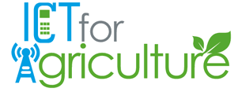
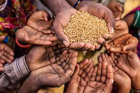

Our Vision/Mission Statement
Farmwings recognizes the importance of capacity development in strengthening research for
development (R4D) through Tech. We support formal and informal
training activities as part of our strategy to improve food security and reduce
poverty in the region, through capacity development programs, indirectly
through knowledge our trained personels will in turn passed on to others. farmwings offers
capacity development to international program partners to aid the improvement of research
practices and general knowledge. The overall goal of our training activities is to strengthen
the capability of partners in the national agricultural research and extension systems (NARES).
Our training activities facilitate research collaboration between farmwings and the NARES,
ultimately allowing those involved to conduct research in their own regions.

Why Africa
The continent is bursting with potential; almost 200 million hectares,
sub-Saharan Africa is home to nearly half of the world’s uncultivated land that can
be brought into production. Africa uses only 2 percent of its renewable water resources
compared to 5 percent globally. Together with abundant resources, including a resourceful,
enterprising youth population, strategic investments in agriculture can unleash virtuous growth cycles.
How can Africa, then, capitalize on these opportunities?
Way Forward
African farmers need new technology, higher-yielding, more resilient food crops
that deliver bountiful harvests. New techniques are beginning to boost yields in rice and
cocoa, among other crops. African farmers need more ICT , more irrigation, and better
infrastructure that links them to lucrative regional food markets. We need sound policies that
do not discriminate against the farm sector. Women produce the bulk of food in Africa, and yet they are
largely locked out of land ownership, access to credit, and productive farm inputs such as fertilizers,
pesticides, and farming tools.
Further, they are often bypassed by extension services, limiting their productivity.